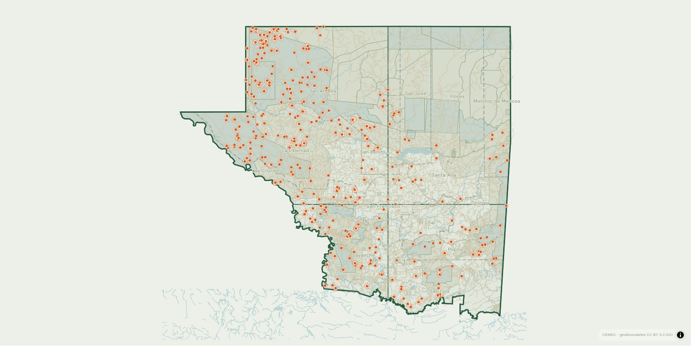

Monitoreo territorial / Guatemala
Petén
Observaciones satelitales para comprender el territorio.
986detecciones térmicas
—días con observaciones
01 — 31 marzo 2026Petén · instrumento VIIRS
Ejemplo histórico. La cobertura consultada y el estado de cada API se mantienen en Fuentes y sensores.

VIIRSColor por sensorCEMEC · geoBoundaries CC BY 3.0 IGO
Cuándo se observaron
Detecciones por día · marzo de 202601 mar15 mar31 mar
Consultar valores diarios
| Fecha UTC | Detecciones VIIRS |
|---|
Las observaciones dependen del sensor, sus condiciones de adquisición y el producto distribuido.